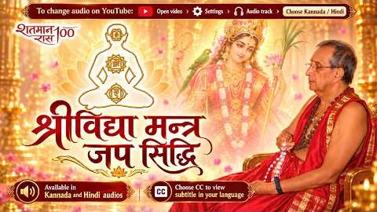

Interests
After hours
Two things I enjoy making time for are editing a recording until a listener can follow it, and setting Kannada type on a page.

Film editing & title animation
Antevasa
NaadaNandana’s series brings the teachings of Padma Shri Dr R Sathyanarayana to listeners. I edited video and animated titles for the series.
ಮುದ್ರಣ
Typography & software
BV Mudrana
Dr R S Nandakumar and I designed this page-layout application for Brahmavidya. It opens older PageMaker books and converts legacy text to Unicode, so editors can work on Kannada, Sanskrit and English publications again.
Explore BV Mudrana →
Spoken word
On stage
In Gamaka, a singer gives voice to a poem and a commentator opens up its meaning for the audience. I take the commentator’s part. I also host programmes, including the birth centenary celebration for Dr R Sathyanarayana in Mysuru.
Watch a stage recording →